The ability of students to solve tasks is important for the development of their various skills. Students should be able to understand the information given, identify the critical features and their interrelationships, construct or apply an external representation, finally, take right decision for solving the task. Interest in contest essentially depends on tasks. Attraction, invention, tricks, surprise should be desirable features of each task presented to contest. The tasks have to be selected carefully, taking into account the different aspects of each task, i.e. what educational power it contains and how to interpret its’ attractiveness to students.
Click on presented icons and look at the tasks that you can get during the Bebras challenge.
Pre-Primary Task Example
Ages 5-8
Alien Residents
(Age group: Pre-Primary; Difficulty: easy)
Cute creatures live in newly discovered planets.
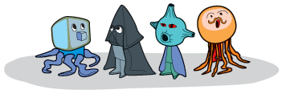

According to what feature it is possible to assign a planet to the creature?
Answer:
A. Colour B . Possibility of rotation C. Shape D. Expression of emotion
Solution:
The answer C is correct.
It's Informatics
Information analysis is a vital element of problem solving. Now we need to analyse objects – planets and creatures. We need to look for similar features and match planets with creatures. The same feature should be used to make all matches.
Primary Task Examples
Ages 8-10
Programming Lamps
(Age group: Primary; Difficulty: medium)
A beaver controls a grid of lamps by using a special keyboard. By one command he can change states of all lamps in respective column or row: if a lamp is shining – it is turned off, if a lamp is not shining – it is turned on. Beaver wrote 4 programs:
1. 1C 5C 2R 3R 4R
2. 1R 5R 2C 3R 4R
3. 1R 5R 3R 4R 5R 1C 5C
4. 1C 2C 3C 4C 5C 1C 5C 1R 5R
C represents a column and R a row. For example, a command 1C turns on all lamps of the first column. If we repeat the same command (1C), all lamps of the first column will be turned off. Two of the above programs give the result as shown in the picture. Two of the programs presents a different result. Which of them?
Solution:
It's Informatics
The binary number system plays a central role in how information of all kinds is stored on computers. Understanding binary logic can lift a lot of the mystery from computers, because at a fundamental level they’re really just machines for flipping binary digits on and off. Binary representation is very much used in informatics, since all data are stored into bits, and each bit can take either 0 or 1 as value. Construction of lamp is based on binary logic, or Boolean algebra, when two states are used: light is on (shining) - light is off (not shining).
Benjamins Task Examples
Ages 11-12

Dress code for beavers
(Age group: Benjamins; Difficulty: easy; Category: ALG, STRUC)
Beavers like complex rule systems and have therefore established a new dress code. Some beavers don't use the correct combination of clothes. Use the graph to determine which beaver is dressed correctly. The graphic is called a tree because there is a single root node (the topmost) with branches connecting other nodes – like a real tree. At every node you have to decide which direction you want to go within the tree, you can’t go up again.
Which beaver is not dressed like the dress code?

Answer:
A  B
B  C
C  D
D 
Solution:
The second beaver (answer B) is dressed not by the dress code. He should have a blue hat instead of a red one.
It's Informatics
This is an example of a decision tree used in pattern recognition. A decision tree is a graph that uses a branching method to illustrate every possible outcome of a decision.
Water supply
(Age group: Benjamins; Difficulty: medium; Category: STRUC)
Beaver has constructed a pipeline system to water his apple tree.
The expressions contain variables A, B, C, D, which may be true or false. A variable has the value true, if the corresponding gate is open, and false, if it is closed.
In which case the apple tree gets water?
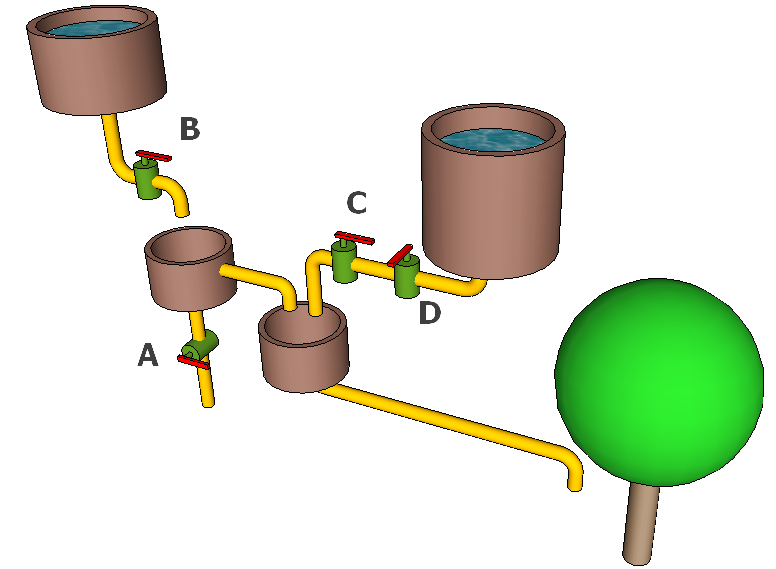
Answer:
A: A = false, B = true, C = false, D = false
B: A = true, B = true, C = false, D = false
C: A = true, B = false, C = false, D = true
D: A = false, B = false, C = false, D = true
Solution:
Correct answer is A. Since B is open and A is closed, water comes to tree.
B: Since A is open, the water coming from B goes directly down through A.
C: Since B is closed, there is no water coming from the left source. Since C is closed, the right source is also blocked.
D: Since B is closed, there is no water coming from the left source. Since C is closed, the right source is also blocked.
It's Informatics
Computer programs process data structures that model real things. A model is an abstraction, a simplified image of some real scenario. In this case the gates are represented by variables that contain the values open or closed. This is an abstraction, since all other properties of gates are ignored.
Spherical robot
(Age group: Benjamins; Difficulty: medium)
The BeaverBall is a toy that can be operated by remote control, and understands each of four direction commands.

If the BeaverBall moves to a white square, it drops down one level. The BeaverBall ignores commands that cause it to move outside the borders.
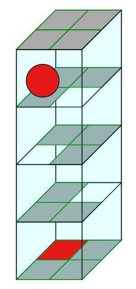
Look at the position of the BeaverBall in the picture above. Which of the following lists of directions will cause the BeaverBall to reach the GOAL?
A: E, W, N, W, W
B: E, W, N, E, S, W
C: E, W, E, N, S, W
D: E, N, W, S, N, E, W
Solution:
The correct answer is D.
A – The BeaverBall does not reach the bottom level (it cannot move in direction W and so ignores the final two W commands).
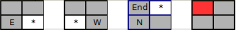
B – The BeaverBall reaches the bottom level but stops on a square that is not the GOAL square.
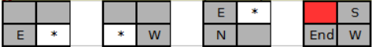
C – The BeaverBall reaches the bottom level but stops on a square that is not the GOAL square.

D – The BeaverBall reaches the GOAL. So, this is the correct answer.
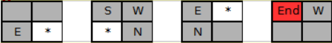
It's Informatics
computer program is a sequence of instructions from a set of possibilities. This task requires one to write a computer program in a very simple programming language that consists of only four possible commands N, S, E, W. This introduces one important element of many computer programming languages, sequential composition, which means following commands one after another in order.
Animation
(Age group: Benjamins; Difficulty: easy)
B-taro is planning an animation, which shows a sequence of pictures of a face. The animation should run smoothly. Therefore, the order of the pictures is correct, if only one attribute of the face changes from one picture to the next. Unfortunately, the pictures got mixed up. Now B-taro must find the correct order again. Luckily, he knows which picture is last. He labels the five other pictures with letters A to E.
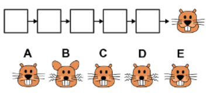
What is the correct order of the five other pictures?
(1) D → B → E → C → A
(2) C → B → D → A → E
(3) D → B → C → E → A
(4) B → D → C → A → E
Solution:
The correct order of the five other pictures is: (4) B → D → C → A → E
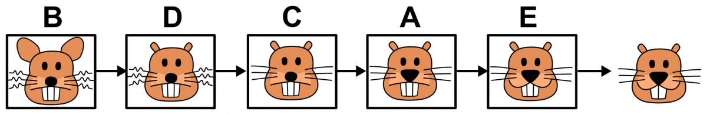
These are the only attribute changes from one picture to the next:
B → D: The ears change from large to small.
D → C: The whiskers change from curly to straight.
C → A: The nose changes from small to large.
A → E: The mouth changes from plain to smile.
E → last picture: The number of teeth changes from 3 to 2.
It's Informatics
In order to find the differences between the pictures, you have to find about about the essential attributes of the depicted faces first. The list of attributes and their possible values is:
ears: small, large
mouth: plain, smile
nose: small, large
number of teeth: 2, 3
whiskers: curly, straight
Now, for instance, you can describe face A as a list of attribute-value pairs: (ears: small; mouth: plain; nose: large; number of teeth: 3; whiskers: straight) Nowadays, computers are not bad at processing images, like finding differences between them. But it is much easier for computers to work on structured data like lists of attribute-value pairs. In informatics, it is very usual to model things from the real world as “objects” that have attributes and values. Objects with the same set of attributes (like all beaver faces) are then summarized into a “class”. But what if the computer has to deal with a beaver face that has an attribute so far unknown? The computer might get in trouble.
Cadets Task Examples
Ages 13-14
Cloud of Castoria
(Age group: Cadets; Difficulty: medium; Category: INF, USE)
The Castorians store their data in a cloud of four interconnected server computers. The picture shows all the connections between the servers.
For a higher data safety all data is stored on both store servers STORE-1 and STORE-2.
For a higher access probability all data is accessible through both port servers PORT-1 and PORT-2.
The data is stored only on store servers and port servers do not store any data.
STORE-1 is accessible through STORE-2 and vice versa.
Which statement is FALSE ?

Answer:
A) If STORE-1 and PORT-2 are destroyed then all Castorian data is inaccessible.
B) If STORE-2 and STORE-1 are destroyed then all data in the Castorian cloud is lost.
C) If PORT-1 and PORT-2 are destroyed then all Castorian data is inaccessible.
D) If PORT-2 and PORT-1 are destroyed then all data in the Castorian cloud is lost.
Solution:
The answer D is false. If PORT-2 and PORT-1 are destroyed then all data in the Castorian cloud is inaccessible, but not lost.
It's Informatics
For any data there are risks to become inaccessible for some time, or to get lost definitively. If you manage the storage of your data yourself, you decide yourself, what risks you take.
If you transfer the responsibility for your data to an Informatics service company, you should know what risks they take. Besides loss and inaccessibility there are many more risks. E.g. your data might be copied and misused by someone, so your privacy is hurt. Your data might be changed maliciously, so you cannot trust it anymore.
Is the careless "cloud" metaphor just a commercial trick to obscure from you the many risks you take when giving away the responsibility for your data?
Fast laundry
(Age group: Cadets; Difficulty: easy; Category: ALG)
Beaver Joe has started a new laundry business. He has got three machines: a washer, a dryer and a pressing iron. Every machine is connected through its own timer which provides for half an hour of electricity.
So, when a client arrives, he needs 90 minutes for all of the three procedures. And three clients using the machinery consequently need 270 minutes.
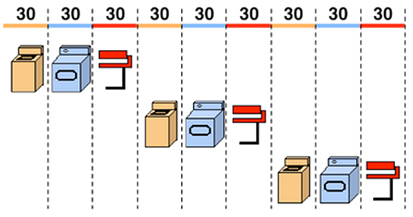
But now, there are three beavers arriving which are really busy. Each one them has enough clothes for a load of its own. But they agree that they want to finish as quickly as possible.
How many minutes does it take for all three of them to finish their laundry?
>Answer:
A) 90 minutes B) 120 minutes C) 150 minutes D) 270 minutes
Solution:
Answer C) is correct: beaver 1 needs 90 minutes anyway. During his use of the dryer, beaver 2 starts with washing, and finishes drying at the same time that beaver 1 is finishing with the iron and beaver 3 finishes his washing. So beaver 3 needs two more turns (dryer and iron). This is a total of the 90 minutes for beaver 1 plus the two turns of beaver 3 (60 minutes), which is 150 minutes.
It's Informatics
CPUs are working in a similar way as the laundry. If every device is used as soon it is free, computation becomes faster. Pipelining is an important idea for constructing CPUs. It’s a cheap way to speed up computation.
Beaver dam
(Age group: Cadets; Difficulty: medium)
The beaver community designs a new dam on the river. They want to use the least number of logs. They are smart, so they want to take advantage of the small islands in the river. The picture shows the river, the islands, and the number of logs needed to build each dam segment.
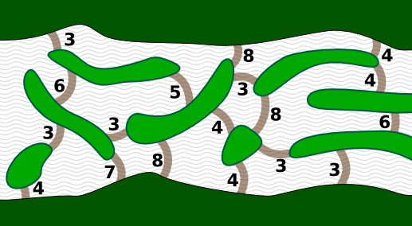
What is the least number of logs needed for the new dam?
1. 14 logs
2. 15 logs
3. 16 logs
4. 17 logs
Solution:
Here is the most efficient dam design:

The beavers will need 4+4+3+4=15 logs. If you are not new to Bebras, you must had seen tasks in which you have to find the shortest path between two points. Building a dam with the the least number of logs is the same as finding the shortest path from one side of the river to another, where the length of the path segments is measured by the number of logs.
It's Informatics
Computer scientists are lazy and smart, which is a great combination. They learn a bag of tricks, and whenever they encounter a problem, they try apply one of them. In this case, they would observe that building a dam across the river is the same thing as getting to the other side – with the least number of logs. In this way they transform a new problem (building dams) into a well-known one (finding the shortest path). The algorithm we used for solving it is called Dijkstra's algorithm, by its invention E. W. Dijkstra, who was one of the most influential computer scientists and a discoverer of many interesting algorithms. Does the task – and in particular the picture – look familiar? Two years ago, beavers were building bridges to all these islands. Despite the similarity, this is a completely different task. Computer scientists do not mind, though; they just put another trick from their huge bag.

Juniors Task Examples
Ages 15-16
Friends
(Age group: Juniors; Difficulty: medium; Category: STRUC, SOC)
Lucia and her friends are registered in a social network. Here are Lucia's friends and their friends.

A line means friendship between two people. For example Monica is Lucia's friend but Alex is not Lucia's friend.
• If someone shares a photo with some of his/her friends then those friends can also comment on it.
• If someone comments a photo then all his/her friends can see the comment and the photo, but cannot comment on it unless they originally could.
Lucia has uploaded a photo. With whom can she share it if she does not want Jacob to see it?
Answer:
A) Dana, Michael, Eve
B) Dana, Eve, Monica
C) Michael, Eve, Jacob
D) Micheal, Peter, Monica
Solution:
A) is correct. Lucia has 6 friends. Dana, Michael and Eve aren’t friends with Jacob, so they can’t see Lucia’s photo by the rule, that if someone comments a photo then all his/her friends can see the comment and the photo.
It's Informatics
Managing access to private information is very important nowadays. When uploading private pictures to the Internet, one always has to think carefully about who might see the picture, even in the future. Many employers today check for additional information about an applicant. Since it is very difficult to actually control who can see a picture, best is never to upload pictures to the Internet except pictures, you would also put on public display at your local bus station or school.
The structure displayed in the picture represents a graph. Graphs are an important tool in informatics to represent things like social networks. A simple graph consists only of nodes (representing persons in a social network) and edges (representing friendship relations). Methods to automatically analyze graphs are very useful, not only for social networks but also for example in a GPS application, where crossroads are represented by nodes and the streets between correspond to edges. Then a computer program can use this graph to find the shortest way between two places.
Password machine
(Age group: Juniors; Difficulty: medium; Category: INF)
In the school’s computer lab the beavers have to set new passwords for their accounts. They are allowed to use lower-case letters, capital letters and the digits from 0 to 9. Each password must have a typical order to be accepted.
A-Z means any capital letter from the alphabet.
0-9 means any digit.
a-z means any lower-case letter from the alphabet.
There are certain rules for the password to be accepted.
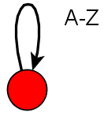
In a loop any quantity of letters or digits can be used several times. In this loop the beavers are allowed to use zero, one or more capital letters.
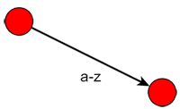
An edge means that the beavers have to use exactly one letter or digit. This edge demands one lower-case letter.
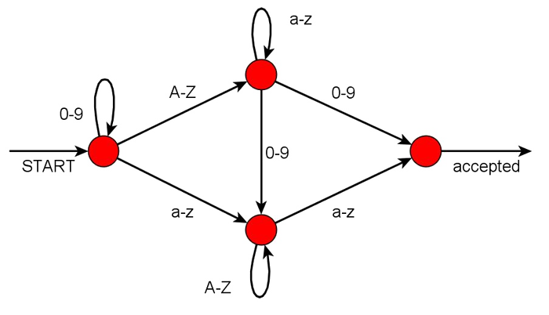
Which of the following passwords won’t be accepted?
Answer:
A) 123aNNa
B) Peter3ABCd
C) 2010Beaver4EVEr
D) bENNOZzz
Solution:
D) “bENNOZzz” is the password that won’t be accepted. It ends with a capital-case letter followed by two lower-case letters, which isn’t allowed.
A) “123aNNa” , B) “Peter33ABCd” and C) “2010Beaver4EVEr” are legitimate.
It's Informatics
The graphic of an abstract machine, a theoretical model of a computer hardware or software system, is a good way to visualize and understand how computers, programs, etc. deal with input. It also shows the visualization of rules.
Pirates
(Age group: Juniors; Difficulty: hard)
Jane and Jill play a board game Pirate Hunters. At each move, one of the policemen (but not both) moves to a neighboring place. In the next move, the pirate, who is faster and always jumps for two places. Policemen always move to an unoccupied place – they cannot move to a place occupied by the pirate or his colleague policeman. The game is finished when the pirate is forced to jump onto one of the policemen … which would be now (see the picture), except that it is currently the policemen turn. To win, the policemen must force the pirate into this position when it is the pirate's turn.

Jane, who plays the pirate is quite skilled at evading being captured. You are smart as well, though. If you help Jill play a perfect game, how many moves will she make before the pirate is caught?
A. 2
B. 3
C. 5
D. Jill cannot win
Solution:
Jill cannot win the game if Jane plays perfectly. Let us assume that Jill actually forced Jane into the above situation and it is Jane's turn (so she loses). What did the board look like before Jill's last move? Jill moved one or the other policeman up or down. Since the board is symmetric, we shall assume that it was the right policeman that moved; the situation for the left one is the same. Thus the previous situation was one of these.
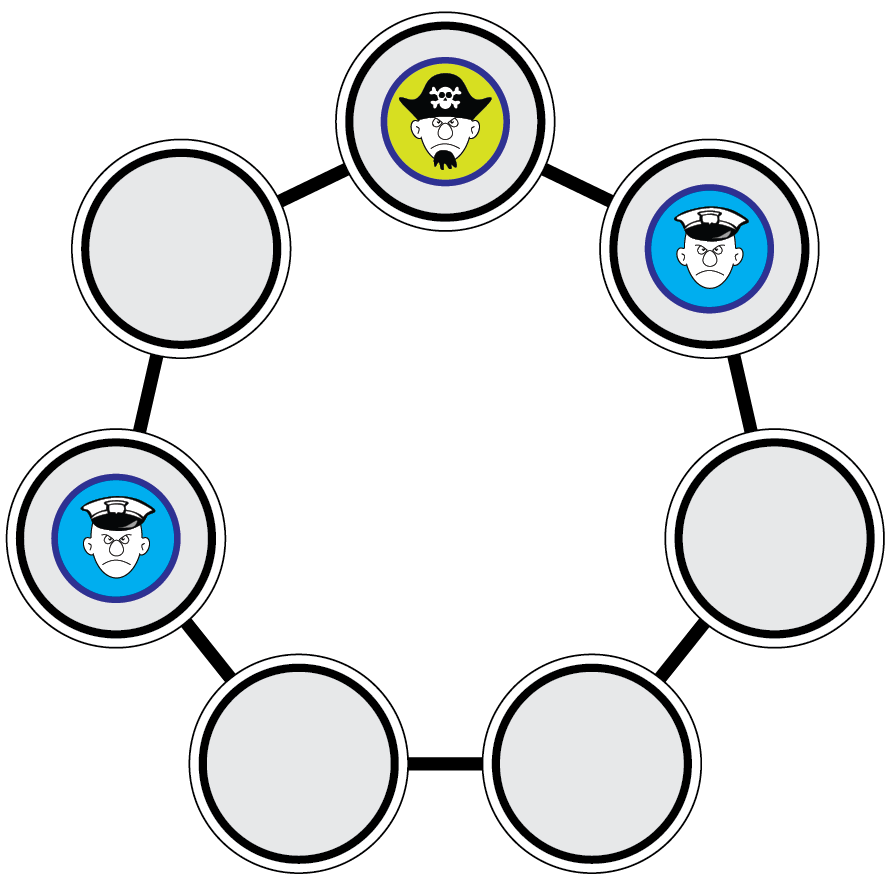 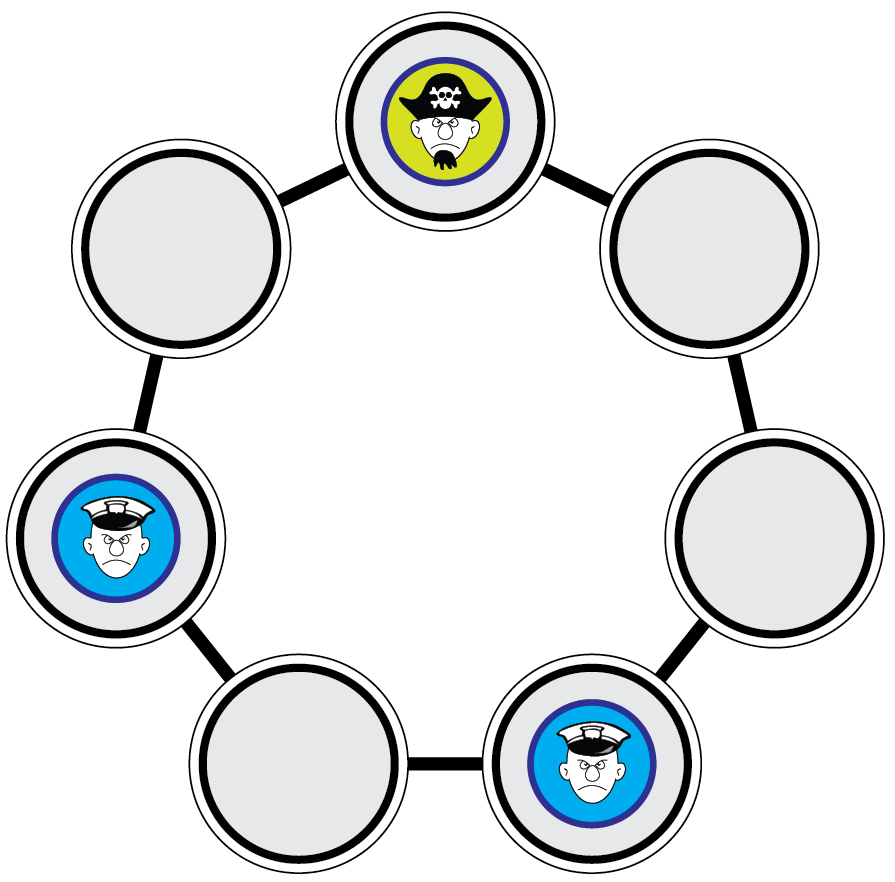
Let us go one more move back. The pirate must had come from the right. Hence the situation before that was one of these two:
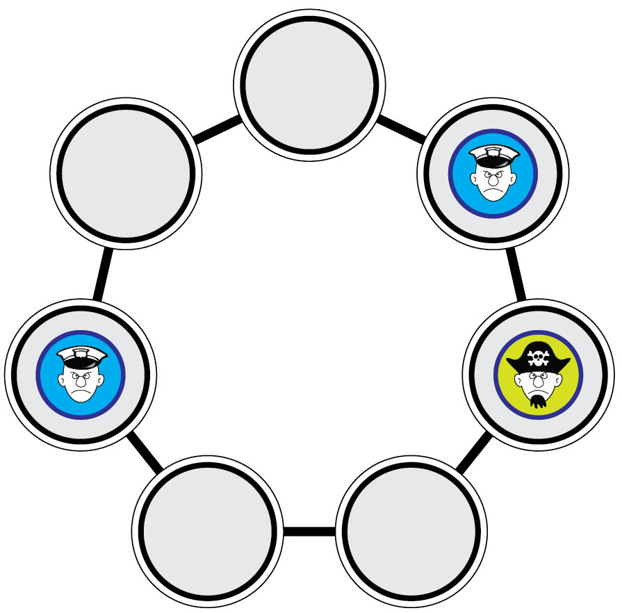 
The above situation, in which the pirate is captured, can therefore arise only from these two positions (and their mirrored versions). However, if Jane is indeed a good player and she found herself in one of these two positions, she would surely move the pirate to the left and not up.
It's Informatics
Programs that play board games work by computing the possible path through a “graph” of game states. They usually start from the current state (opposed to this, we worked from the end state backwards) and compute the possible moves they and their opponent can make. They employ algorithms like Minmax, which score the potential moves that the computer can make by assuming that the opponent will make the best possible move. In complex games, like chess, computers analyze the moves up to some depth (up to around 15 moves) and use approximate methods to evaluate the position.
Seniors Task Examples
Ages 17-18

Paper Folding
(Age group: Seniors; Difficulty: medium; Category: ALG, INF)
The Beaver has developed a programming language for paper folding. This language can be used to explain how to fold any piece of paper with straight sides. One of the commands in this language is fold.
e = fold(a, b) means:
fold the piece of paper in a way that side a is lying completely on side b.
In that way you create a new side, the fold. This line is called e.
Example:

Please note, that the paper remains on the table during folding, and that the length of side b is twice the length of side a.
How does the paper rectangle (a, b, c, d) look like after the execution of these three commands?
e = fold(c, a); f = fold(c, d); g = fold(a, f)
Answer:
A  B
B  C
C  D
D 
Solution:
The correct answer is A. The following images explain the execution of the fold-operation step by step.
![]()
It's Informatics
Functions are an important concept in programming. A function call is considered to be the start of some activity. Programmers say: The function accepts some parameters (here: two sides), processes some data and returns an object (here: the fold). This is different from the concept of functions in mathematics.
Plant Life
(Age group: Seniors; Difficulty: easy; Category: ALG)
The Beaver loves flowers. May be this is the reason why he has invented a simple programming language for visual design based on the idea of plant life.
Each picture starts with a square called a. A visual object can perform three operations: grow(), split() and die().
The following program explains the semantics:
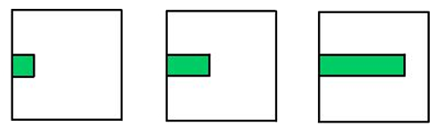
a.grow(east);  a.grow(east) ;
a.grow(east) ;
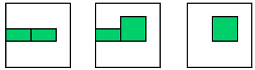b,c = a.split(); c.grow(north); b.die();
Please note, that only an oblong object may execute the split()-Operation producing two shorter Objects of equal size. A square cannot be split.
Beaver wants to write a program that transforms the left image to the right image. Which could be the first four commands of this program?
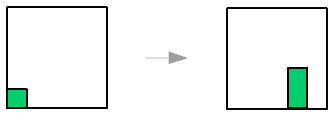
Answer:
A. a.grow(east); a.grow(east); b,c = a.split(); b.die();
B. a.grow(north); a.grow(east); a.grow(east); b,c =a.split();
C. a.grow(east); a.grow(east); a.grow (north); a.die();
D. a.grow(east); b,c = a.split(); c.grow(north); c.grow(east);
Solution:
The correct solution is A. This is the complete program: A. a.grow(east); a.grow(east); b,c = a.split(); d,e = c.split(); b.die(); d.die(); e.grow(north);
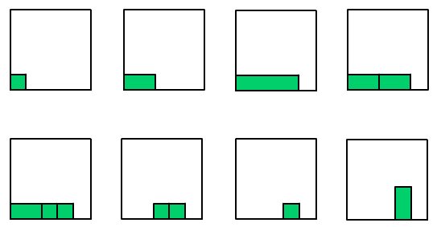
C does not work because after the fourth command the image is empty. B and D result to rectangles with minimum side lengths of two units. It is impossible to reduce such a shape to a rectangle with a minimum side length of one unit using the split()-Operation. A gardener must grow things carefully!
It's Informatics
Computer programs, class libraries and programming languages are often based on intuitive metaphors. This makes is easier for a human programmer to understand and use them. For example the LOGO graphics system uses the idea of a moving turtle pulling a pen over the ground. In this task the Beaver adopted the idea of vegetation. Plants cannot walk from one spot to another, since they do not have legs and muscles. But plants can grow, reproduce vegetative and die. With these operations they can implement locomotion in a special way. This is an algorithmic facet of biology.
{C}
Dress code for beavers
(Age group: Benjamins; Difficulty: easy; Category: ALG, STRUC)
Beavers like complex rule systems and have therefore established a new dress code. Some beavers don’t use the correct combination of clothes. Use the graph to determine which beaver is dressed correctly. The graphic is called a tree because there is a single root node (the topmost) with branches connecting other nodes – like a real tree. At every node you have to decide which direction you want to go within the tree, you can’t go up again.
Which beaver is not dressed like the dress code?
Answer:
A B C D
Solution:
The second beaver (answer B) is dressed not by the dress code. He should have a blue hat instead of a red one.
It's Informatics
This is an example of a decision tree used in pattern recognition. A decision tree is a graph that uses a branching method to illustrate every possible outcome of a decision.